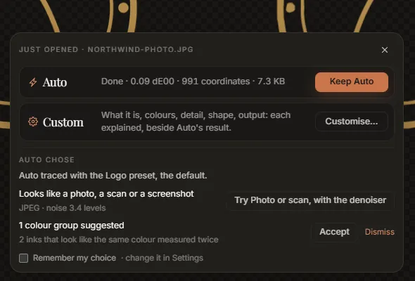
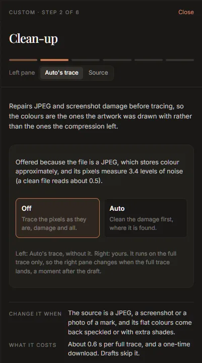

Tutorial: clean up a JPEG logo
A logo saved as a JPEG, or captured in a screenshot, is the most common thing people need to vectorize, and the hardest to trace well. JPEG compression leaves faint blocks and halos around every edge and shifts the colours slightly, and a faithful trace reproduces all of it: flat colours come back speckled, one colour comes back as three, and the edges wobble. This tutorial removes the damage first, then settles the palette, then checks the result.
You need a JPEG (or a lossy WebP, or a screenshot) of a logo. About 10 minutes, plus a one-time download of about 80 MB.
1. Get the denoiser
The denoiser is the trained model that repairs compression damage before tracing. It is not in the installer. Open Settings, and under Denoiser press Download. The dialog says where it comes from and what it costs; press Download again. It is checked against its published checksum when it arrives, and it runs on your computer: nothing is uploaded.
You can do this later, from the prompts in the steps below; doing it first means the first trace is already a clean one.
2. Open the JPEG
Drop the file on the window, or press Ctrl+O. Auto traces it at once, and the choice card appears over the stage. When Auto's trace lands, Auto chose says what it noticed:

Looks like a photo, a scan or a screenshot appears because the file is a JPEG, or because its pixels measure noisy (the evidence is on the second line, as a noise level: a clean file reads about 0.5).
3. Turn the clean-up on
Either press Try Photo or scan, with the denoiser on the card, which switches to the Photo or scan preset, or press Customise… and go through the wizard: its second step, Clean-up, is there because the image looks damaged.

Choose Auto: the trace is measured, and the damage is cleaned where the trace disagrees with the image in places that should be flat. (Tune's Denoiser switch at the top of the rail is the same setting: Off, Auto, On.)
The denoiser runs on the full trace only, so the right pane changes a moment after the draft. With the wizard open, the left pane shows Auto's trace without it, for comparison.
4. Settle the palette
Compression turns one flat colour into a cluster of near-identical ones. Open the Colours step in the wizard (or the palette at the bottom of the Result tab).
- Accept the suggested groups whose members are the same colour measured twice. Hover a suggestion first: the drawing singles out the shapes it would join.
- If the logo has, say, three colours and the palette still has more, set Colours to 3 and look at the groups it proposes. Accept the ones that are right; Dismiss the others.
Each accepted group re-traces, so the shapes between the merged colours really join into one. See the palette for everything groups can do.
5. Check the edges
Close the wizard (Finish), or stay on the Result tab.
- Read the quality report. The mean colour difference measures the trace against the JPEG, damage and all, so a cleaned trace can show a higher number than a faithful one: it no longer copies the noise. Judge by eye.
- Press Find the worst corner. The viewer zooms to 12× with the pixel grid on, at the place of largest disagreement. On a JPEG this is usually a halo the trace has rightly ignored.
- Turn on Certainty. Red bands show edges the pixels could not pin down. If whole outlines are red, the JPEG was small or heavily compressed; a larger source helps more than any setting.
- Hold Space in A/B to flick between the JPEG and the SVG.
If small specks survived, raise Speckle floor (Tune, Detail) a little. If a detail was lost, lower it, or lower Precision.
6. Match the brand colours
The colours now come from the cleaned image, which is closer to the artwork than the JPEG, but still a measurement. If you know the brand's real values:
- In the palette, press Paste brand palette.
- Paste the colours, one per line, as hex (
#12443E) or CSS variables. Include every colour the logo uses, white and black too: every ink is matched to its nearest pasted colour. - Check the preview. A gold figure means a large move; make sure it is the right colour.
- Press Snap.
7. Take it out
Snapped colours live on the drawing on screen. In version 0.2.0, Export re-traces first and writes the measured colours, so after snapping use Copy SVG and paste the drawing where it is going. If you did not snap, Export (or Ctrl+E) writes the SVG, a minified copy, PNGs and an asset pack; see Export.
The Result tab will still list The source is a JPEG, so these colours carry its compression damage. That is a fact about the file you started from, and it goes into the asset pack's README so whoever uses the files knows to check the colours.
Why not trace the JPEG as it is?
You can: with the denoiser Off, the trace reproduces the JPEG faithfully, and the colour difference is lower because it copies the damage. That is the right choice when the damage is part of what you want to keep. For a logo, it almost never is.